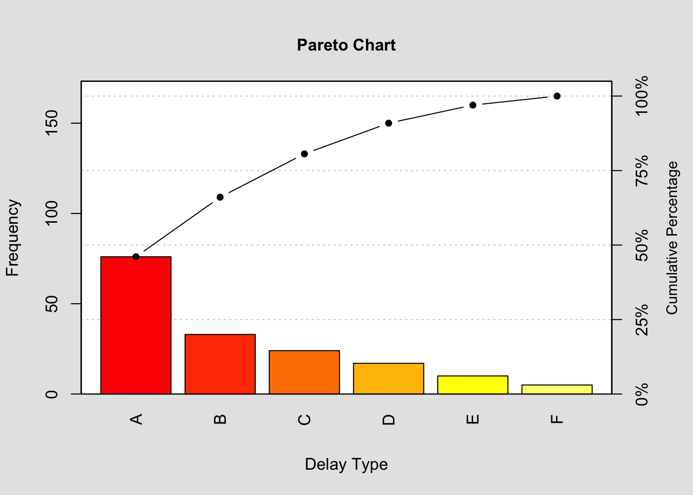

options(repos = list(CRAN="http://cran.rstudio.com/"))
install.packages("qcc")
The downloaded binary packages are in
/var/folders/p6/4cwhhzhx2y71kgd20yjk0tqm0000gn/T//RtmpEGyLsj/downloaded_packageslibrary("qcc")Package 'qcc' version 2.7Type 'citation("qcc")' for citing this R package in publications.df <- data.frame(delay.type=c('A', 'B', 'C', 'D', 'E', 'F'))
df$frequency = c(76, 33, 24, 17, 10, 5)
df delay.type frequency
1 A 76
2 B 33
3 C 24
4 D 17
5 E 10
6 F 5pareto.chart(df$frequency,
main='Pareto Chart',
xlab='Delay Type',
col=heat.colors(length(df$frequency))
)
Pareto chart analysis for df$frequency
Frequency Cum.Freq. Percentage Cum.Percent.
A 76.000000 76.000000 46.060606 46.060606
B 33.000000 109.000000 20.000000 66.060606
C 24.000000 133.000000 14.545455 80.606061
D 17.000000 150.000000 10.303030 90.909091
E 10.000000 160.000000 6.060606 96.969697
F 5.000000 165.000000 3.030303 100.000000